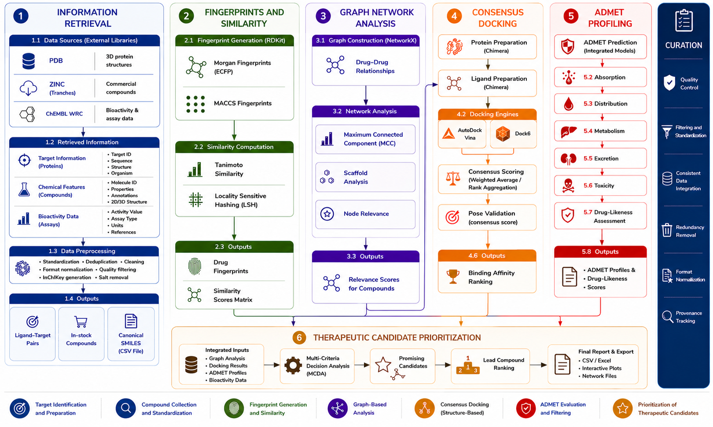
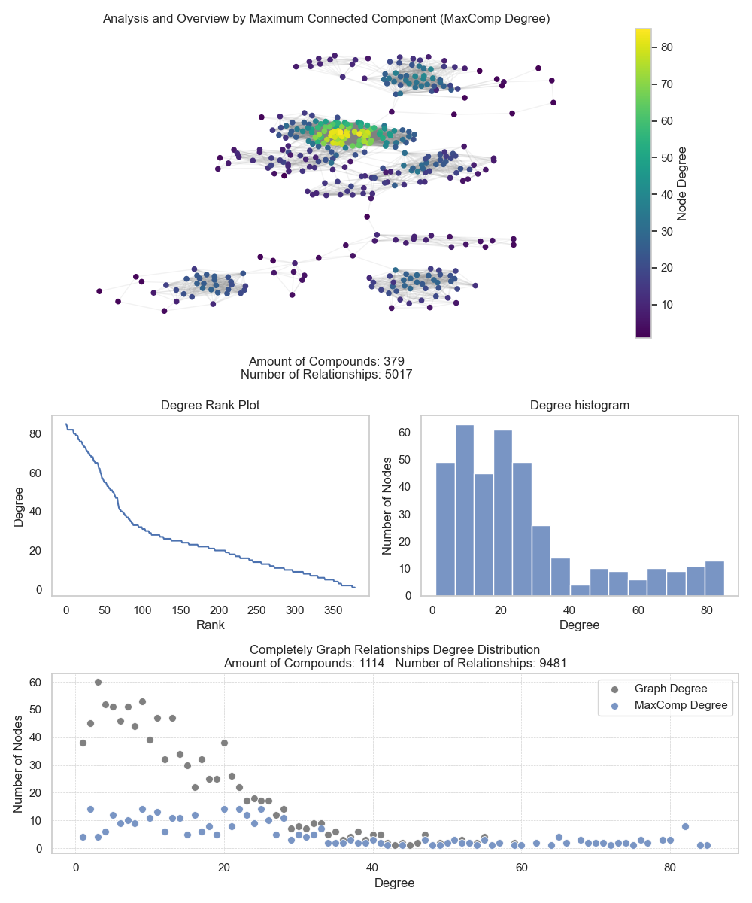

Computational Molecular Intelligence
BioMolExplorer is a robust and extensible computational framework designed to streamline workflows for information retrieval, molecular similarity analysis, docking, redocking validation, graph-based molecular exploration, and ADMET evaluation, thereby supporting advanced computer-aided drug design (CADD) and computational drug discovery initiatives.
Protein structure retrieval and filtering
Bioactivity and target extraction
Large-scale compound libraries evaluation
Automated redocking validation
Consensus docking score integration for advanced ranking
Early-stage absorption, distribution, and toxicity profiling
Managing high-volume heterogeneous molecular repositories remains one of the principal challenges in modern computer-aided drug design (CADD) workflows. Public biological repositories often contain inconsistent metadata, incomplete experimental information, duplicate records, and records with varying levels of quality.
BioMolExplorer was designed to address these limitations through a flexible information retrieval architecture that integrates and standardizes datasets from PDB, ChEMBL, and ZINC. The platform enables the automated generation of research-ready molecular datasets suitable for computational pharmacology, high-throughput virtual screening, network analysis, and comprehensive molecular similarity investigations.
To ensure maximum precision, the framework incorporates an advanced structural curation layer that uses a consensus docking approach integrating AutoDock Vina and Dock6. This method combines distinct algorithmic scoring functions to deliver superior binding pose validation, minimize false positives, and evaluate protein-ligand reproducibility. Furthermore, the system introduces an early-stage ADMET profiling pipeline that allows researchers to automatically evaluate the absorption, distribution, metabolism, excretion, and toxicity parameters of extracted compounds before committing to downstream analytical steps.
Standardized integration pipelines for biological, chemical, and structural data.
Extraction and filtering strategies aligned with therapeutic target investigation.
Construction of molecular affinity networks and connected component analysis.
Early-stage evaluation of absorption, distribution, metabolism, excretion, and toxicity properties for strategic candidate screening.
BioMolExplorer combines automated retrieval pipelines, molecular fingerprinting, graph analysis, and redocking validation into a unified computational ecosystem.
Automated extraction pipelines for PDB, ChEMBL, and ZINC repositories supporting large-scale computational screening initiatives.
Configurable filters for EC number, bioactivity thresholds, molecule type, similarity score, molecular weight, experimental method, and structural quality.
Native support for Morgan, MACCS, and pharmacophore fingerprint generation workflows.
Tanimoto-based molecular similarity analysis for clustering, scaffold identification, and candidate prioritization.
AutoDock Vina-based validation strategies for assessing structural consistency and docking reproducibility.
Graph-centric analysis for detecting molecular communities, connected components, and common scaffolds.
Synergistic combination of AutoDock Vina and Dock6 engines to establish optimized cross-scoring metrics and improved binding pose ranking.
Early-stage prediction of absorption, distribution, metabolism, excretion, and toxicity variables directly from compiled chemical domains.

The BioMolExplorer framework integrates information retrieval, molecular fingerprint generation, similarity analysis, graph-based network modeling, consensus docking, and ADMET profiling into a unified computational pipeline for drug discovery and repositioning. Structural, chemical, and bioactivity data are collected from public repositories and processed through cheminformatics and network analysis workflows. The resulting candidates are subsequently evaluated using consensus docking and pharmacokinetic/toxicity prediction strategies, enabling multi-criteria prioritization of promising therapeutic compounds. The architecture is operationalized through a programmable workflow module composed of two major stages, Information Retrieval and Analysis, which orchestrate the execution and integration of all computational tasks defined in the framework. A dedicated curation layer ensures data quality, standardization, provenance tracking, and consistent integration throughout the entire workflow.
Responsible for data extraction, normalization, and integration across molecular, structural, and bioactivity repositories.
Downloads protein structures using EC number, resolution threshold, ligand presence, polymer entity, and experimental method filters.
Retrieves bioactivities, therapeutic targets, molecular entities, and similarity-based compound relationships.
Handles large-scale URI-based molecular library acquisition workflows for virtual screening applications.
Responsible for fingerprint generation, similarity modeling, graph analysis, and automated redocking validation.
Executes automated docking, redocking pipelines, and RMSD-based validation procedures for structural curation.
Early-stage prediction of absorption, distribution, metabolism, excretion, and toxicity variables directly from compiled chemical domains.
Generates molecular fingerprints, computes similarity matrices, and identifies connected molecular components.
Automated installation pipeline using integrated scripts
chmod +x install.sh && ./install.shCreate an apps/ folder inside the project root.
Insert Anaconda, Chimera, DMS and Dock6 installers inside.
Rename payloads exactly to: Anaconda.sh and chimera.bin.
Include dms.zip and dock6.tgz to complete deployment.
Cross-distribution step-by-step environment configuration (Self-adjusting Layout)
Grant execution permissions and build base management paths.
chmod +x <file.sh>
./<file.sh>Generate dependencies automatically using definition mapping.
conda env create -f environment.ymlInitialize target binary structures configuration routines.
chmod +x <file.bin>
./<file.bin>Unpack molecular surface source records and compile target package.
unzip dms.zip -d $HOME/progs
cd $HOME/progs/dms*
make && sudo make installCompile advanced scoring infrastructure tools from source packages.
sudo apt update && \
sudo apt install build-essential \
zlib1g-dev flex gfortran yacc -y
tar -zxvf dock6.tgz -C $HOME/progs
cd $HOME/progs/dock6*/install
./configure gnu && make all
echo 'export PATH="$PATH:$HOME/progs/dock6/bin"' >> ~/.bashrc
source ~/.bashrcBioMolExplorer structures molecular relationship networks through graph-based similarity analysis and connected component identification. Molecular fingerprints are transformed into similarity references capable of revealing scaffold overlap, cluster organization, and affinity relationships.
By focusing on the maximum connected component, the platform reduces chemical noise, enhances interpretability, and prioritizes compounds with stronger structural and pharmacological relevance.
Identification of common molecular fragments and affinity patterns.
Structured outputs suitable for machine learning and advanced analytics.

If BioMolExplorer or derived datasets contribute to your research, please provide proper academic attribution.
Pires da Silva, M., Alves de Oliveira, T., Habib Bechelane Maia, E., Oliveira Mendes, G., Cristina Moreira Damázio, L., Brito Barbosa, D., Andrade Leite, F. H., Falkoski, L., Flores de Souza Marra, I., Siqueira Valle, M., Silva Matos Andrade, L., Čmelo, I., Fayne, D., Batista de Carvalho, P., Marques da Silva, A., & Gutterres Taranto, A. (2025). Data-driven chemical domain for polypharmacology agents: Focus on Alzheimer’s disease. Mendeley Data. https://doi.org/10.17632/5njg46dfj4.3